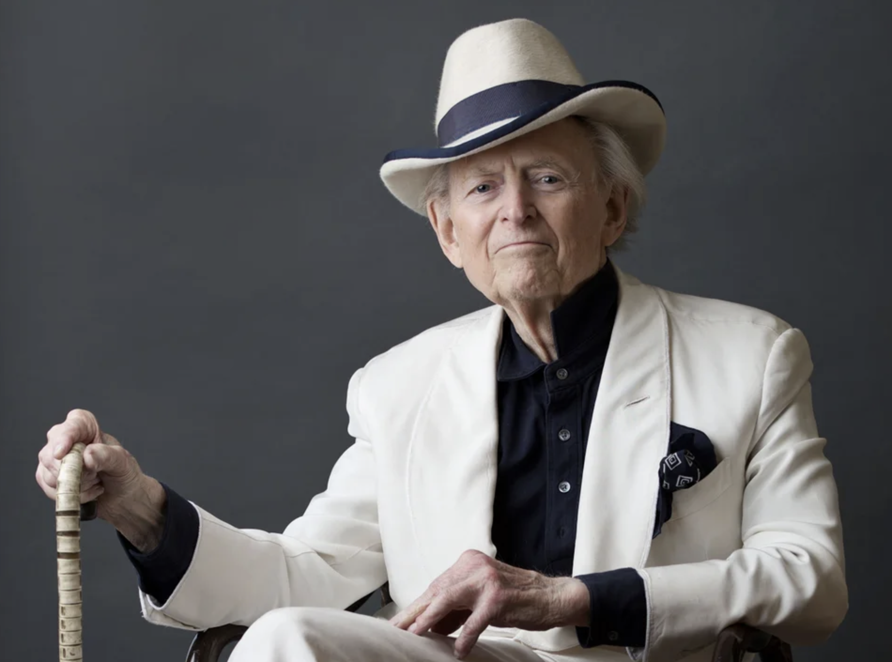

La soledat és una experiència emocional que es produeix quan una persona sent que no té connexions significatives amb els altres o que no està prou acompanyada emocionalment encara que pugui estar físicament sola o envoltada de gent, i aquesta sensació pot aparèixer quan falten relacions properes, confiança o sentiment de pertinença a un grup, de manera que pot ser viscuda com una situació desagradable quan és no desitjada i mantinguda en el temps, però també pot tenir un vessant positiu quan és escollida perquè permet reflexionar, descansar mentalment i conèixer-se millor a un mateix
Diferents tipus

”La solitud és i sempre ha estat l'experiència central i inevitable de tot home.”
“Viure sola és com ser en una festa on ningú no et fa cas.“
“Prefereixo estar sol que mal acompanyat“
“Vull ser capaç d'estar sola, de trobar-ho nutritiu, no pas una simple espera.“